来源：凤凰财经WEMONEY 作者：吴炜
凤凰WEMONEY讯 8月17日，凤凰WEMONEY发表了一篇名为《P2P资金存管多方画像：银行“打太极”！第三方支付真的要倒霉？》的文章，对银监会下发的《网络借贷资金存管业务指引（征求意见稿）》（下称“《指引》”）进行了解析，引发了大家的热议。
据了解，目前银行与P2P平台进行资金存管合作有三种模式，分别是银行直连、直接存管和联合存管。
许多读者在后台留言，“搞不清这三种模式是如何运作的？在实际操作过程中有什么区别？”
今天，凤凰WEMONEY就带你体验一下！
银行直连
银行直连是指P2P网贷平台直接与银行开通支付结算通道，在交易过程中，不用提前充值，交易资金直接在线结算，而投资人投标回款后，资金直接返回到投资人原始支付的银行卡中，无需人工提现。
在该模式下，平台在银行建有“存管专用账户”，该账户平台不能直接操作，资金交易情况受银行监管。其业务流程示意图如下：
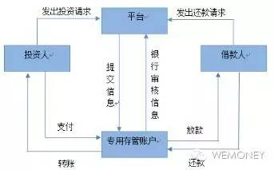
银行直连模式业务流程示意图
（图片来源：盈灿咨询）
银行直连模式对平台的审查条件较为严格。开鑫贷和金宝保是当前少有的几家采用银行直连模式的平台。
目前开鑫贷的投资可以通过江苏银行、江苏银行直销银行、中国银行[-0.54% 资金 研报]的网银支付以及部分银行的快捷支付来进行。凤凰WEMONEY通过中国银行的网银支付完成了对开鑫贷标的的投资。
第一步：选择合适标的，填写投资金额，输入验证码，点击“立即投资”，跳出确认并支付页面。
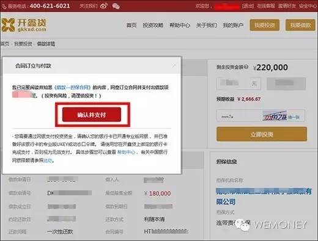
第二步：点击“确认并支付”，跳转到网银支付页面。
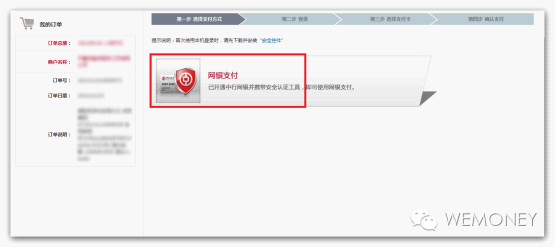
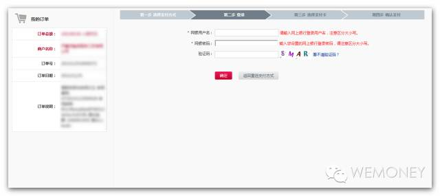
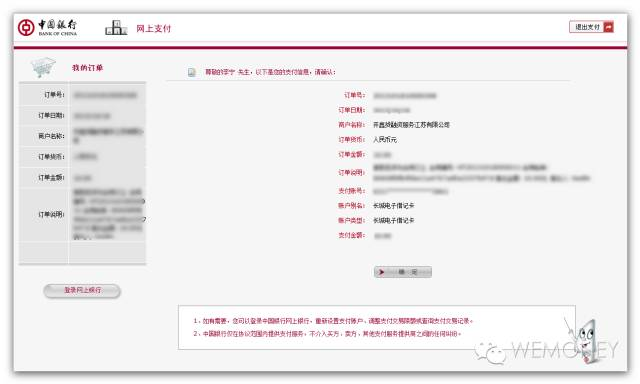
第三步：完成支付。
直接存管
在直接存管模式下，具有两套账户体系，一类是平台在银行开设的存管账户（大账户），一类是投资人在存管银行的个人账户（子账户）。如平台有风险准备金或担保公司等，一般还会开设风险准备金账户和担保账户等。
由于用户的资金从一开始就不在平台体系内运转，有效避免了平台随意挪用资金。其业务流程示意图如下：
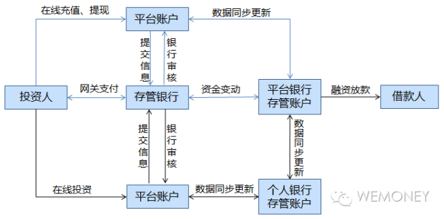
直接存管模式业务流程示意图
（图片来源：盈灿咨询）
直接存管是目前P2P平台与银行资金存管合作中最常见的模式。据第三方机构不完全统计，目前有28家P2P平台实现了与银行直接存管的对接。凤凰WEMONEY以积木盒子为例，进行了投资体验：
第一步：投标前，操作页面提示：需先开通第三方支付账户。
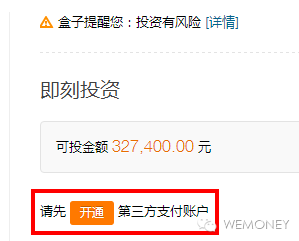
第二步：点击开通后，操作页面跳转至开通民生存管账户的界面。

第三步：进入民生存管账户个人开户界面。
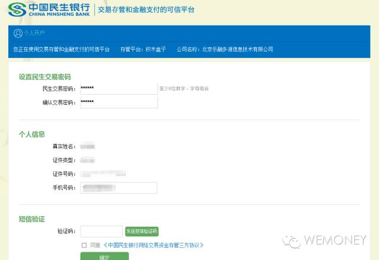
第四步：进入订单支付页面。
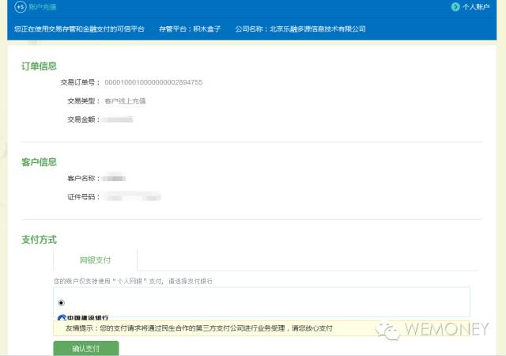
注意：跳转至网银支付页面：
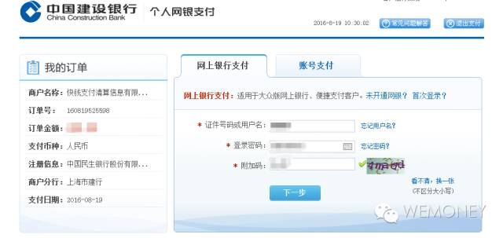
第五步：支付成功。
联合存管
联合存管模式下，一般要求第三方支付机构或P2P网贷平台在存管银行开设存管账户，并根据平台发出的相关指令完成充值、投资、提现等功能，而由银行监管资金流向。第三方支付机构则担任技术辅助方，提供支付结算、技术咨询、服务定制、运营维护等服务，协助银行更高效地完成所有借贷资金在出借人与借款人的存管账户之间的划转。
但在这种存管模式下，一般不会为投资人开设个人账户。其业务流程示意图如下：
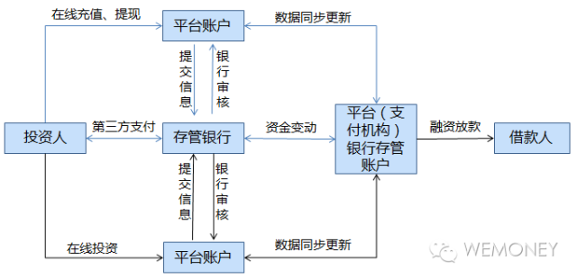
联合存管模式业务流程示意图
（图片来源：盈灿咨询）
据第三方机构不完全统计，目前有18家P2P平台真正实现了联合存管的对接。凤凰WEMONEY以中瑞财富为例，进行了投资体验：
第一步：点击投资后，操作页面提示：投资前需先开通徽商银行资金存管账户，同时完成第三方支付渠道（宝易互通）实名认证。
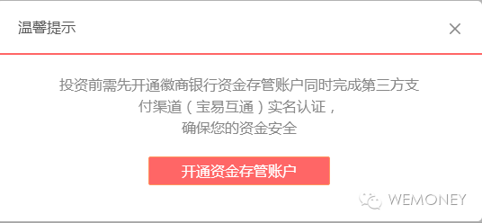
第二步：进入开户界面。

点击“开通账号”后，跳转到第三方支付开户界面：
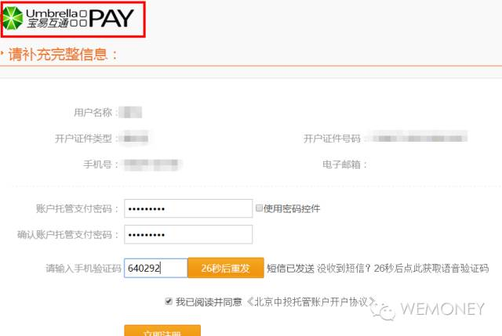
第三步：进入支付界面。
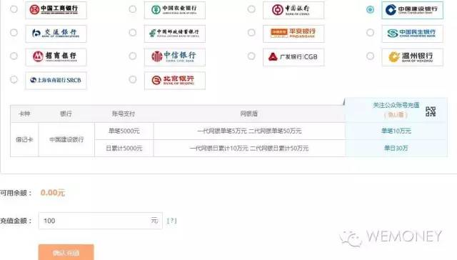
跳转到网银支付界面，“商户”显示是易宝[0.00%]支付有限公司。
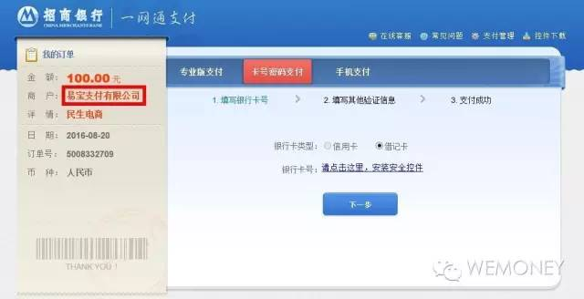
第四步：支付成功。
从以上实际操作来看，在银行直连模式下，确定投资后，页面直接跳转至相应的网银支付页面；在直接存管模式下投资，页面跳转至存管银行开户界面，随后连接网银进行支付（该模式的支付通道主要依靠第三方支付）；在联合存管模式下，投资步骤稍显复杂，需开通银行存管账户和第三方支付账户才能进行支付。
事实上，P2P与银行选择哪种资金存管模式，都得根据合作的具体情况来定。而究竟哪种模式更受监管层认可，恐怕只有最终的《指引》才能给出答案。